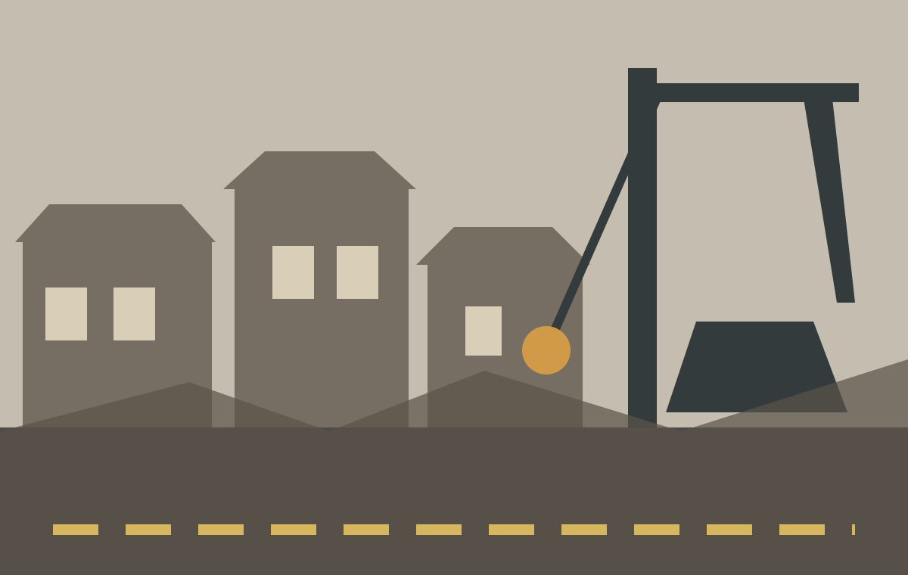

The Remnants
Redevelopment, testimony and the Yongsan disaster
Yongsan District 4 demolition site, Seoul Metropolitan Fire & Disaster Headquarters, CC BY-SA 4.0.
When “progress” removes people
The Remnants examines the continuing effects of the 2009 Yongsan disaster. Tenants resisting eviction occupied a rooftop structure, which caught fire during a police operation. Five protesters and one police officer died. The film shifts attention away from new buildings and property values towards people whose homes, businesses and relationships were disrupted by redevelopment.
Official redevelopment language can describe older neighbourhoods as outdated spaces waiting to be improved. The documentary challenges this view. It treats the neighbourhood as a lived place shaped by work, memory and community rather than simply as land available for investment.

Making excluded voices visible
Unlike Parasite, the documentary does not invent an architectural metaphor. It relies on interviews and personal testimony. Survivors describe experiences that were simplified or criminalised in public discussion. Their accounts do not form one perfectly consistent story; memories contain guilt, disagreement and uncertainty. This complexity matters because it allows them to appear as people rather than symbols.
The camera gives time to speech, pauses and uncomfortable memories. In doing so, documentary becomes a way of restoring social visibility. Those treated as obstacles to development can explain what was lost and how the event continued to shape their lives long after the physical site changed.
Tenants and small businesses lose space without sharing equally in the value created by redevelopment.
Residents are physically removed from the neighbourhoods that support their work and relationships.
Their right to influence decisions is weaker than that of developers, government agencies and police.
Porteux and Kim argue that coercion in South Korean redevelopment cannot be understood as private conflict alone; it is shaped by the relationship between development interests, public policy and policing. This supports the film’s wider point: inequality is maintained not only through personal prejudice but also through institutions that decide whose claims to the city count.